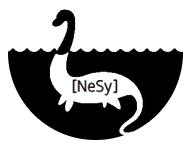
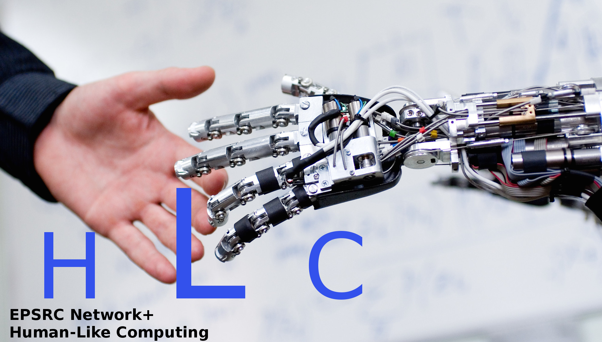

IJCLR 2022
|  |
 |
||
| ILP 2022 |
NeSy
2022 |
AAIP 2022 |
HLC 2022 |
The 2nd International Joint Conference on Learning & Reasoning (IJCLR) will be held in
Cumberland Lodge, Windsor Great Park, United Kingdom, 28-30 September 2022.
The 1st IJCLR took place from 25-27 October 2021 (virtual).
[Video recordings].
The rapid progress in machine learning has been the primary
reason for a fresh look in the transormative potential of AI as
a whole during the past decade. A crucial milestone for taking
full advantage of this potential is the endowment of algorithms
that learn from experience with the ability to consult existing
knowledge and reason with what has already been learned.
Integrating learning and reasoning constitutes one of the key
open questions in AI, and holds the potential of addressing many
of the shortcomings of contemporary AI approaches, including the
black-box nature and the brittleness of deep learning, and the
difficulty to adapt knowledge representation models in the light
of new data. Integrating learning and reasoning calls for
approaches that combine knowledge representation and machine
reasoning techniques with learning algorithms from the fields of
neural, statistical and relational learning.
Four international conferences and workshops addressing such
research topics join forces in the 2nd International Conference
on Learning & Reasoning (IJCLR 2022):
- The 31st International Conference on Inductive Logic Programming (ILP) The ILP conference series has been the premier forum for work on logic-based approaches to learning for three decades. Originally focusing on the induction of logic programs, over the years it has expanded its research horizon to other forms of relational learning and to probabilistic approaches.
- The 16th International Workshop on Neural-Symbolic Learning & Reasoning (NeSy) The NeSy workshop series is the longest standing gathering for the presentation and discussion of cutting edge research in neurosymbolic AI. NeSy is the yearly meeting of the Neural-Symbolic Learning and Reasoning Association.
- The 11th International Workshop on Approaches and Applications of Inductive Programming (AAIP) The AAIP workshop series focuses on learning executable programs in arbitrary programming languages, from incomplete specifications. e.g. from examples of their input/output behaviour.
- The 3rd International Workshop on Human-Like
Computing (HLC)
HLC research aims to endow
machines with human-like perceptual, reasoning and learning
abilities which support collaboration and communication with
human beings. The workshop aim is to bring together leading
experts in AI and Cognitive Science to investigate areas of
fruitful interaction in which human co-operative and
communicative skills can be studied and modelled
computationally.
IJCLR aims at bringing together researchers and practitioners
working on various aspects of learning & reasoning, via
presentation of cutting-edge research on topics of special
interest to the participating conferences/workshops. In addition
to each of the four events' individual programs, which will be
held in parallel, IJCLR aims to promote collaboration and
cross-fertilization between different approaches and
methodologies to integrating learning & reasoning, via joint
keynotes, panel discussions and poster sessions.
Call for Papers
Journal Track: IJCLR’s journal track, the special issue on
Learning and Reasoning supported by the Machine Learning Journal
(MLJ), is accepting paper submissions on regular cut-off dates
since February 2020. Submissions are solicited on all aspects of
Learning and Reasoning and topics where machine learning is
combined with machine reasoning or knowledge representation.
Papers are published online by MLJ upon acceptance and authors
of accepted papers are invited to present their work at the
conference. The upcoming cut-off dates for the journal track
are: 1st Feb 2022, 1st May 2022, 1st Aug 2022.
Conference Track: Each conference/workshop participating in
IJCLR will be soliciting paper submissions on the topics of its
interest. Accepted papers will be presented at IJCLR.
Additionally, IJCLR features a “General Track” where authors are
invited to submit work that is relevant to the conference but it
does not necessarily fall within the scope of a particular
workshop (ILP, NeSy, AAIP, HLC). Submission deadline: TBA
Recently published papers Track: IJCLR solicits submissions of
high-quality papers on combining learning and reasoning that
have been recently published, or accepted for publication, by a
first-class conference such as ECML/PKDD, ICML, KDD, ICDM, AAAI,
IJCAI, etc., or journal such as MLJ, DMKD, JMLR etc. Papers will
be accepted on the grounds of relevance and quality of the
original publication venue. Accepted papers will be presented at
IJCLR. Submission deadline: TBA
Please follow the Call for Papers link for more information and
guidelines on paper submissions to the IJCLR tracks.
Conference venue
Cumberland Lodge,
Windsor Great Park, United Kingdom
Recent Updates
- [15/01/2022] New cut-off dates for the journal track: 1st
Feb, 1st May and 1st Aug 2022.
- [01/10/2021] The conference website was launched.
Important Dates
| Journal track cut-off dates |
1st Feb 2022, 1st May 2022, 1st Aug 2022 |
| Conference abstract
deadline (ILP) |
25 May 2022 |
| Conference paper deadline |
31 May 2022 |
| Author notification |
30 July 2022 |
| Late-breaking &
recently published papers |
TBA |
| Author notification (late-breaking) | TBA |
| Camera-ready copies due |
TBA |
| Registration opens |
TBA |
| IJCLR 2022 Conference |
28-30 Sep
2022 |